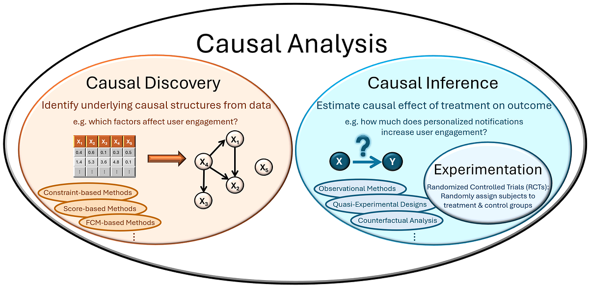
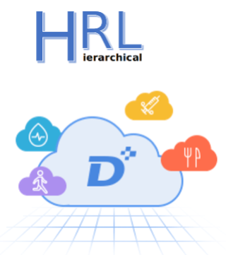
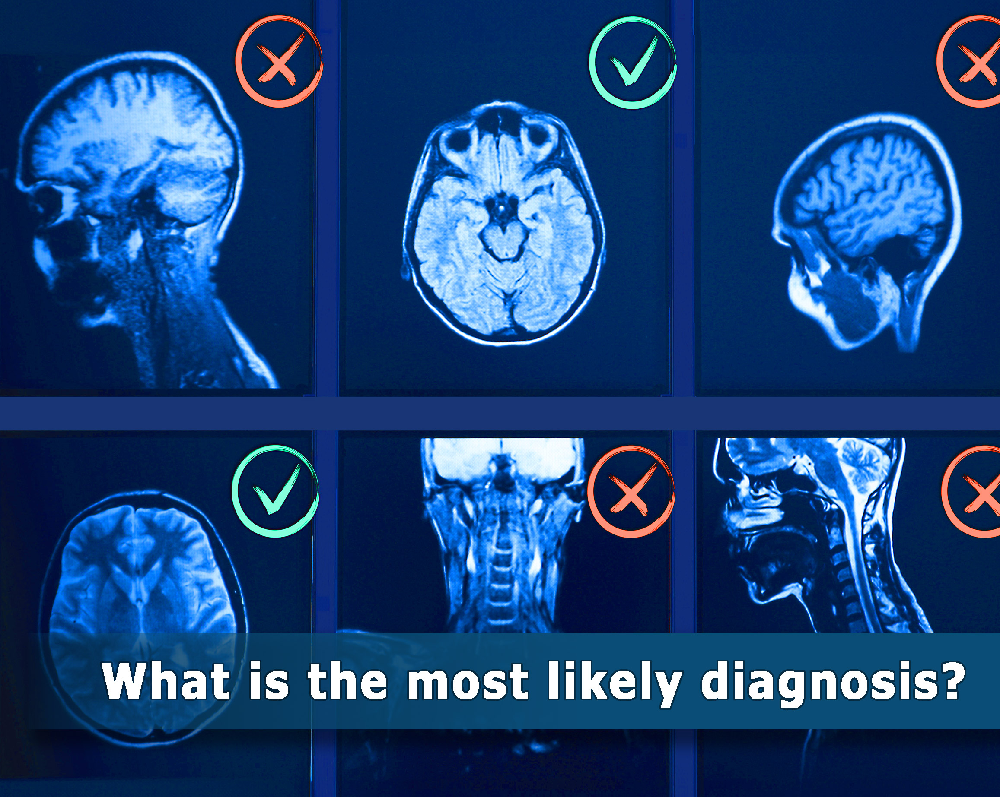

Selected Publication
*, † indicate equal contributions.
|
|
[1] Conflict-Aware Additive Guidance for Flow Models under Compositional Rewards
Xuehui Yu, Fucheng Cai, Meiyi Wang, Xiaopeng Fan, Harold Soh
ICML, 2026.
❓ How do we harness complex pretrained generative priors to satisfy multiple constraints at inference time without hallucinated generation? Check out our CAR guidance, a plug-and-play module that corrects off-manifold drift on the fly.
💡 Key insight: in compositional reward settings, the approximation error grows sharply with gradient misalignment (1 − cos φ) and the number of reward functions G, where φ is the average angular divergence between guidance channels.
Code | Paper
|
|
|
[2] Shared Control/Autonomy: A Historical Perspective, Current Trends, and the Role of Generative AI
Michael Hagenow, Mario Selvaggio, Xuehui Yu, Yanwei Wang, Yiannis Demiris, Andreea Bobu, Yilun Du, Harold Soh, Dylan Losey, Julie Shah
Authorea Preprints, 2025.
🚨 Our new survey examines recent trends in shared control/autonomy (SC/SA), including the growing role of generative AI. We also introduce a human-centered taxonomy for classifying SC/SA methods.
Website | Paper
|
|
|
[3] Skill-aware Mutual Information Optimisation for Generalisation in Reinforcement Learning
Xuehui Yu, Mhairi Dunion, Xin Li, Stefano V Albrecht
NeurIPS, 2024.
Keywords: contrastive learning, RL, meta RL, zero-shot generalisation.
❓ How to build general robots capable of seamlessly operating in any environment, with any object, and utilising various skills?
With our SaMI learning objective, RL agents are incentivised to become versatile and zero-shot generalise across infinite tasks
💡 Generalisation starts with corrective behaviors. The ability to correct and try again is likely a key ingredient.
Code | Paper | Our benchmark: Sa-Panda-gym | SlidesLive demo video
|
|
 |
[4] Causal discovery based on hierarchical reinforcement learning
Jingchi Jiang, Rujia Shen, Chao Zhao, Yi Guan, Xuehui Yu*, Xuelian Fu
Expert Systems with Applications, 2025.
A hierarchical RL framework (CD-HRL) that splits causal discovery into causal-skeleton learning and edge-direction identification via interdependent high- and low-level policies, improving exploration efficiency on high-dimensional data.
Paper
|
|
|
[5] An interactive food recommendation system using reinforcement learning
Liangliang Liu, Yi Guan, Zi Wang, Rujia Shen, Guowei Zheng, Xuelian Fu, Xuehui Yu*, Jingchi Jiang
Expert Systems with Applications, 2024.
Keywords: food recommender systems, RL, collaborative filtering, cross attention, state representation
Paper| WI Healthcare APP
|
|
|
[6] ARLPE: A Meta Reinforcement Learning Framework for Glucose Regulation in Type 1 Diabetics
Xuehui Yu, Yi Guan, Lian Yan, Shulang Li, Xuelian Fu, Jingchi Jiang
Expert Systems with Applications, 2023.
Keywords: meta-RL, active learning, fast online adaptation, RL generalisation.
❓ How can rapid adaptation be achieved with extremely limited data in an online deployment? Employ “optimistic exploration” through active RL!
💉 A RL-based closed-loop control method for artificial pancreas systems, enabling automatic medication infusion via pump control for diverse, previously unseen clinical patients.
Code | Paper| WI Healthcare APP
|
|
|
[7] DECAF: An Interpretable Deep Cascading Framework for ICU Mortality Prediction
Jingchi Jiang, Xuehui Yu†, Boran Wang, Linjiang Ma, Yi Guan
Artificial Intelligence in Medicine, 2023.
Keywords: graph attention networks, spatio-temporal forecasting, interpretability, mortality prediction.
The dynamic model based on cascading theory, which models the physiological domino effect in environment dynamics; Increasing similarity between training and testing for generalisation in class-imbalanced datasets.
Paper
|
|
 |
[8] Causal Coupled Mechanisms: A Control Method with Cooperation and Competition for Complex System
Xuehui Yu, Jingchi Jiang, Xinmiao Yu, Yi Guan, Xue Li
IEEE BIBM, 2022.
Keywords: hierarchical RL, transfer learning, skill composition, RL generalisation.
💡 Using inductive biases to encourage or ensure the model does not rely on features that we expect to change: The policy should only rely on features which will behave similarly in both the training and testing environments.
Paper
|
|
 |
[9] PercolationDF: A percolation-based medical diagnosis framework
Jingchi Jiang, Xuehui Yu†, Yi Lin, Yi Guan
Mathematical Biosciences and Engineering, 2022.
Keywords: medical diagnosis, knowledge representation.
The dynamic model based on cascading theory, which models the physiological domino effect in environment dynamics; Increasing similarity between training and testing for generalisation in class-imbalanced datasets.
Paper
|